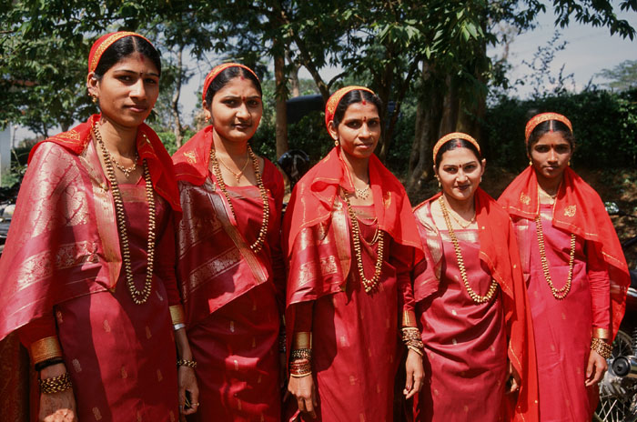
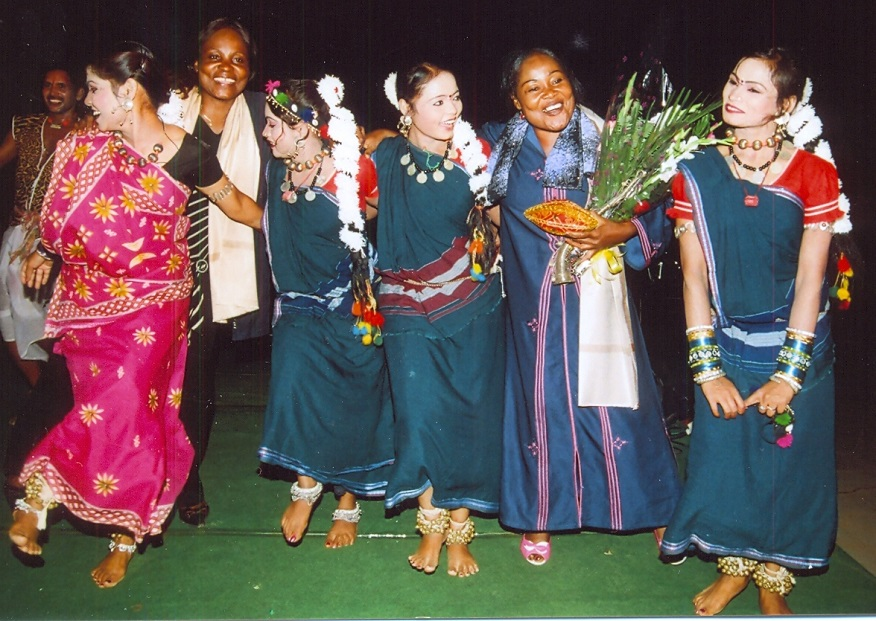
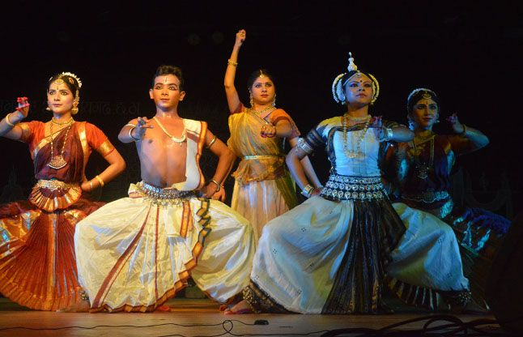
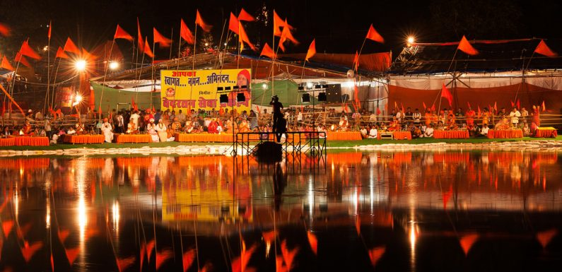

Chattisgarh
- Home
- Food

- Fashion
 

- Festival
- Rajim Kumbh Mela
- Chakradhar Festival

Chakradhar Festival
The town of Raigarh in Chhattisgarh has carved a niche for itself in the cultural scenario of the country. Several distinguished Kathak Dancers and Classical Musicians were born on this soil. Mentions worthy among them are Shree Firtu Maharaj and Vijaya Sharma and most importantly Maharaja Chakradhar Singh in whose memory the Chakradhar Festival is held in Chhattisgarh.
Rajim Kumbh Mela
The Kumbh Mela is one of the holiest gathering of pilgrims in the world. Most people know of Kumbha Mela and its four holy locations, but a secret is that there is a fifth Kumbh Mela. Rajim Kumbh Mela is popular gathering of Vaishnaviites, the followers of lord Vishnu. Rajim is located near the convergence of Mahanadi,Sondur and Pairi rivers. The Rajimalochana Temple is well known for being the venue of the Rajim Kumbh Mela. - Chakradhar Festival
- Rajim Kumbh Mela